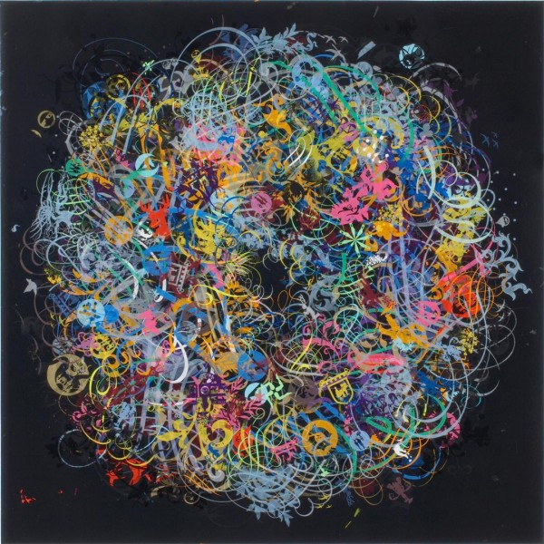

-
The Armory Show
by Aaron Lake Smith March 7, 2011
On a frigid Wednesday in early March, the few artworld types who hadn’t arrived in private cars gathered at a crosswalk on 52nd Street and the West Side Highway to cross the Rubicon into the cavernous piers housing The Armory Show. The women wore pantyhose, furs, parkas and smug expressions. The men wore tuxedos and greased their hair and had tiny little mustaches. Overhead, lavender clouds puffed across the sky, and a lovely pink Manhattan sunset made the cliffs of New Jersey look like a mountain silhouette in the Pacific Northwest. The fading sun hit the bunker-like Twelfth Avenue skyscrapers, turning one side golden and leaving the other in shadow, a perfect angularity that Edward Hopper would have loved.
Arriving at the show on foot was reminiscent of the final Noah’s Ark scenes in the movie 2012. Soviet-simple signs proclaimed “Armory Show: Main Entrance” and big industrial elevators stood ready, like Charon, to ferry souls upstairs to the main exhibition hall. I boarded with a heterogeneous assortment of attendees that looked like the caricaturish cast of Clue—a wrinkled blonde madam covered in furs talked on her cell phone in an American aristocratic accent, “I’ll be right up, post-haste.” A young woman in khaki Communist fatigues who looked like she had just gotten off a plane from Pyongyang. Two model-chiseled Spanish guys, a couple of older men paired off with much younger women, and a tweedy, elderly European gentlemen with balding white hair and mustache who was the spitting image of Albert Einstein. When the elevator to the exhibition opened, the Einstein-doppelganger accosted a middle-aged Asian woman who was trying to get on. “I love your work!” he said, lunging at her in a thick accent. She smiled abashedly, furiously pressing at the elevator’s door-close button.
For a while I stood hunched over a map kiosk, jotting down some notes as people streamed into the exhibition hall. When I looked up there was Einstein-doppelganger, looking at me with admiration. “You are writing by hand I see,” he smiled, rolling his Rs, “This is very good. You can’t trust computers. All zees people just taking notes on their computers, tapping away like monkeys!” He parodied someone struggling with their iPhone. “They all look so pretenzious. I don’t have a computer, I don’t have an e-mayhl, I don’t have a Facebook. You see,” he went on, “I am an artiste. A composer, a poet, a choreographer…” He couldn’t have been younger than 75, and was wearing a moth-bitten-looking tux shirt and a ragged coat, with multicolored handkerchiefs spilling out of the pockets. If he put on a red foam nose, he would have looked like a clown. But his mannerisms were classic bohemian, somewhere between Allen Ginsberg and Joe Gould. He told me his name was Sym.
As I took account of him, Sym looked over my outfit, classic dude jeans-and-t-shirt, with reproach. “Why are you not dressed up in a tux and coat?” he asked, furrowing his brow. I explained that I had just gotten off work and hadn’t had time to get dressed up. “No excuse” he tisked, “You make art with your writing, with your hands. Why with your clothing should you not be making art too? The way you dress should make people smile! That is what fashion is all about. Look at me, I made this in Switzerland” he drew me in towards a cluster of rainbow silk handkerchiefs jutting out of his pocket, which was adorned with broaches of the Swiss flag. Taking my leave, I asked for his full name, saying I would look for his work. “Oh, you won’t find my poems,” he said abashedly. Seventy-something years old and he had never been published. “But when I do get published one day, it will be for paper! A book with a spine! And I will have a contract! And on that contract there will be a stipulation that says NO INTERNET!”
My friend Lisa, an art dealer in her thirties, texted that we should meet up at her Brazilian gallerist friend’s booth. Kisses on the cheek and introductions were made before Lisa grabbed me by the arm. “We’re going to the VIP lounge,” she said, plowing through the crowd. Lisa stopped as we passed a big lumberjack-looking Scandanavian, with a substantial beard. Lisa grabbed him and introduced us, schmoozing viciously as the poor lumberjack tried to conceal his green VIP “ARTIST” neckband. “You have to come over to meet my friends that run this Gallery in Brazil. They love your work.” The lumberjack lookalike hemmed and hawed, looking down at his feet. “I think I already have a gallery in Brazil, but I’m not sure what’s going on with it…” Another Scandinavian, this one vampire-pale and thin, intervened, reprimanding Lisa, “Hey, are you working right now? Now is not the time to be working.” Lisa’s eyes bugged out with exaggerated injury. “Nooooo! I’m not working! I mean I’m kind of always working, but no!” As we walked away, I asked Lisa who the lumberjack-guy was. “That’s Jesper Just” she said breathlessly, “He’s huge!”
The VIP lounge was packed with men wearing indie rock glasses and skinny women in heels. Lisa pointed out Chris Kennedy like he was the Pope. We elbowed our way to the bar, where the champagne was complimentary, and then found Lisa’s friends lounging indolently on some plushy chairs in the corner. Lisa introduced me around– a young Courtney Love extended a waifish hand, “Nice to meet you, darling.” Her goateed Tommy Lee boyfriend smiled. A pretty brunette across the table leaned forward, and said, apropos of nothing, “I’m sorry but I have to say this–I hate men! she looked at me apologetically, “Not you though—I don’t even know you.” A big, swarthy guy with a mop of hair walked up, the kind of magnanimous dude whose mere presence is like a revivifying tonic at pretentious events. He introduced himself as Montaug and told me had come to the Armory Show from San Francisco for “business” (he didn’t elaborate) and that he was going to buy some art. He wore normal dude clothes and was able to interact without immediately betraying insecurity or a craven love of power. “Do you want to see my weed card, Bro?” Montaug said, pulling out a crumpled piece of paper with a passport photo next to some faux-official text, a weedleaf placed in the background like an official state watermark. Our conversation inexorably turned to art. Montaug explained that even though he had cash to spend and was ready to buy, he could barely afford anything at the show. “There’s some good stuff here, but it’s all $65,000 and over. I can do $7,000 bro, but 65K? These people here,” he gestured around, “They’re here because they’re sitting pretty and they’re looking to dispose of some money. Art is money to waste. Throw away money. Money to fucking Bluh–O” he said, enunciating. Like nearly everyone in America, Montaug loved art but seemed repulsed by the pretension of the art world. “You heard of Ryan McGinness, Bro? I have a piece by him, it was the first one I ever bought. I went to his studio and he showed me the whole process. Bought this piece Gloryhole for seven grand. Now he’s in the MoMA and shit but you know what? I love that fucking piece and I won’t give it up for anything. I look at it every morning when I get out of the bathroom and say, Goddammit, I love—this—-fucking—-piece.”
Leaving Montaug, I wandered half-drunk through the endless exhibition hall: past the fluorescent tube-lit rabbit-hole installations, the Unicorn-tapestry women with exaggerated breasts, and the golden letter balloons tacked on the wall, ominously spelling out BAGHDAD.
I jotted down the names of artists whose work looked like it had taken effort, work that smelled like blood and sweat: Wei Dong, Thomas Broome, Jeremy Kost, Patrick Jacobs, Per Barclay, and Michelangelo Pistoletto. But I was pulled, as if pulled by unseen magnets, to one exhibition in particular: an exquisitely carved wooden machine set in a forsaken corner, with a big oval pane of glass and a coin slot. It was like the fortuneteller machine in the movie Big, and I was like Tom Hanks. Inside the glass oval of the machine was a funhouse funnel, littered with wadded-up dollar bills. In the center of the contraption were two black skulls standing up on rods: one had horns and soft dark hair, the other one a curlicue Grecian beard. Periodically, the machine came to life like a pinball game, blowing air that made the wadded-up dollar bills swirl around in the chamber that reminded me of those old TV cash-grabs where wild-eyed, animalistic men stuffed dollar bills in their pockets. The machine made noises recalling a CD of Halloween sound effects, sinister laughter and agonized moans. The piece was called “Kirivert” and I was immediately taken with it. It swirled before me like a dark portal to another world, obfuscating reason. It was the most demonically beautiful object I had ever seen. When it stopped blowing air, I went over to the bearded Frenchman who were drinking wine and laughing together: gallery owners. “Hey…” I approached them meekly, “Do you think you could make it do the blowing thing again?” They nodded sagely, indicating that I wasn’t the first to ask. When they flipped the switch and it turned back on, I stood in front of Kirivert, mesmerized, like listening to Black Sabbath for the first time. I finally understood what it was to love a piece of art–to want to take it home with you and put it in the middle of your living room. To want to stare at it when you come out of the bathroom. To lie prostrate before it five times a day like a Muslim at prayer. And to never, ever sell it for any price.
At closing time the security guards began dispersing the ruddy-faced patrons from the exhibition hall, like stragglers at senior prom. Unable to find Lisa, I followed the crowds into the parking lot, where a frigid wind whipped off the Hudson. A lot of people were running to get on a shuttle bus that said “To the MoMA” on the side. Seeing an opportunity for a warm, free ride across town, I followed them, getting the last seat beside a silent, stone-faced bus driver. Behind me two women in their mid-twenties were discussing whether or not to take acid at the MoMA dance party. “It would be awesome, but I just don’t want to be completely fucked up for eight hours, you know?” One of them was loud and had a sharp, sassy edge to her voice, while the other seemed quieter and kind of sweet. They noticed me eavesdropping and asked if I was headed to the MoMA dance party too. They said they worked in the administrative office for the Armory Show and so got in to the MoMA party for free. I told them I worked for GQ. It was a hundred dollars to get in, and I told them there was no way I was going. “Oh come on, GQ,” the sassy girl taunted me, “You don’t have a hundo lying around?” Continuing to make smalltalk with the sassy girl, I began to feel very depressed. Every question I asked her was countered with a combative-flirty reply, like some kind of Pavlovian animal conditioned by years of aggressive New York dating. When I didn’t respond properly by giving back game, by hustling her and smiling, she looked at me like an alien. In an entire evening at the Armory Show, I realized, Montaug was the only person I met that resembled a human–his soul felt fully intact. The sassy girl asked me what I thought of the show. I went out on a limb and told her what I thought, hoping it would trigger a moment of human exchange. Instead, she twitched mechanically and threw her head back, laughing cruelly, “You think the art world is shitty, just from one night? Wait til you really get to know some of the people in it!”